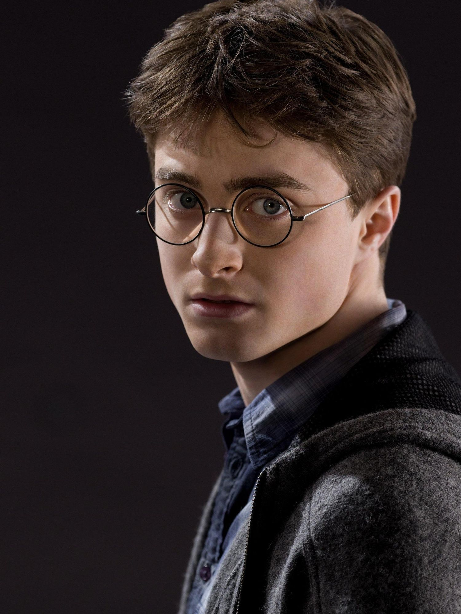
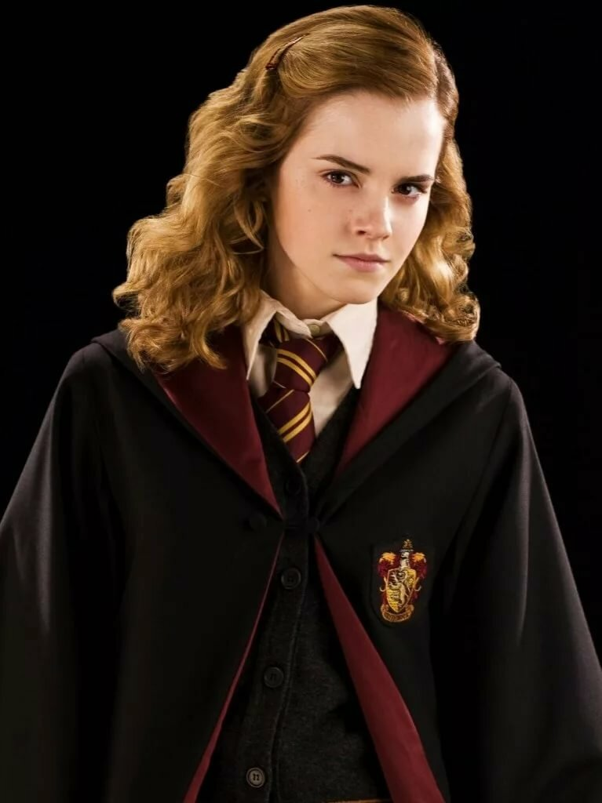
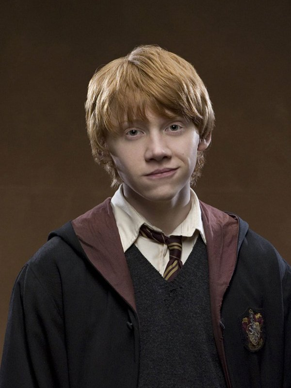
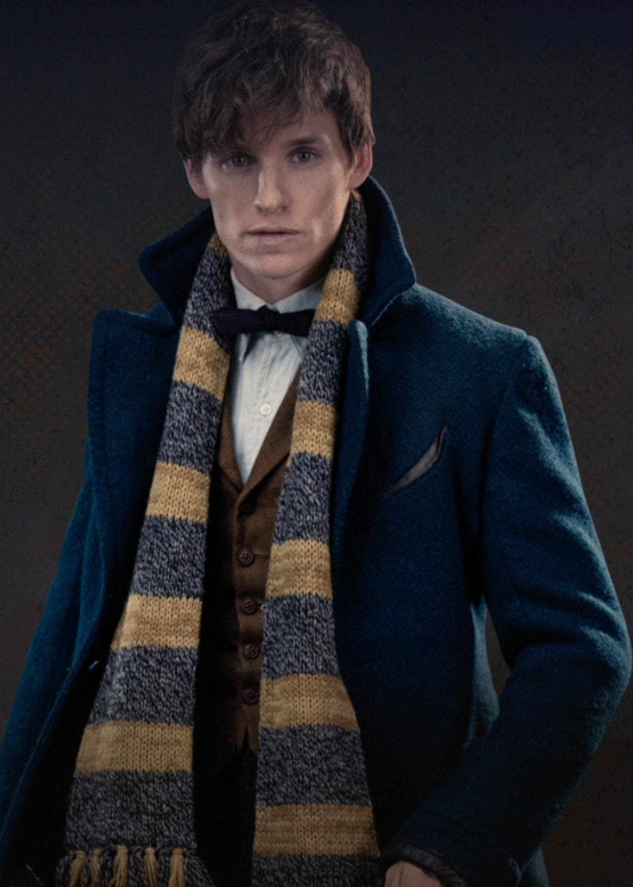

"Harry Potter" is a series of novels written by the British writer J. K. Rowling. The books chronicle the adventures of the young wizard Harry Potter, as well as his friends Ron Weasley and Hermione Granger, who are studying at the Hogwarts School of Witchcraft and Wizardry. The main plot is dedicated to the confrontation between Harry and a dark wizard named Lord Voldemort, whose goals include gaining immortality and enslaving the magical world. Since the publication of the first novel "Harry Potter and the Philosopher's Stone" on June 26, 1997, the books of the series have gained immense popularity, critical acclaim and commercial success around the world. As of February 2018, the number of books sold amounted to about 500 million copies, as a result of which the series entered the list of literary bestsellers. The novels have been translated into 80 languages, including Russian. The last four books have consistently set records as the fastest-selling literary works in history. The series is a combination of many genres, including fantasy and teen romance with elements of adventure, detective, thriller and romance, and also includes a lot of cultural references. According to Rowling, the main theme of the novels is death, although they are considered primarily as children's literature. In addition, the series touches on topics such as prejudice and corruption.
The Harry Potter Film Series is a series of films based on the Harry Potter books by the English writer J. K. Rowling. The series is released by Warner Bros. and consists of ten fantasy films, including the main series - starting with "Harry Potter and the Philosopher's Stone" (2001) and ending with "Harry Potter and the Deathly Hallows: Part 2" (2011) - as well as the spin-off "Fantastic Beasts and Where they Live" (2016) and its sequel "Fantastic Beasts: The Crimes of Grindelwald" (2018). The film series was produced by David Heyman, and Daniel Radcliffe, Rupert Grint and Emma Watson played the roles of three main characters: Harry Potter, Ron Weasley and Hermione Granger. 4 directors worked on the series: Chris Columbus, Alfonso Cuaron, Mike Newell and David Yates. The franchise ranks 3rd in the list of the most profitable film series with $9.2 billion in global profits.
On September 12, 2013, J.K. Rowling announced on her official Facebook account that she would write the script for the film Fantastic Beasts and Where They Live. "Fantastic Beasts and their Habitats" is a textbook mentioned several times in the Harry Potter series of books, but Newt Salamander does not appear there as a character. In 2001, J. K. Rowling published an edition of the textbook in order to send money from its sale to the British charity fund "Detente with Laughter". The book is just a reference book of magical creatures, without a storyline. In September 2013, it was announced that J.K. Rowling would be writing the script for the film. It was her first job as a screenwriter. David Heyman and Steve Clovis participated in the work on the film, both are veterans of the Harry Potter film franchise (the first is the producer, and the second is the screenwriter of all 8 films). After Alfonso Cuaron refused to participate in the filming, Warner Bros. announced that David Yates will direct at least the first part of the planned trilogy. The contract to write the soundtrack was signed with James Howard.
Daniel Radcliffe is a British actor who played the role of Harry Potter in all 8 films. At the moment, Daniel is acting in many films, but his acting fame in professional cinema began with the role of the little wizard.Daniel's parents brought their son to the casting of the first film, and I must say that Daniel even claimed the role of Draco Malfoy, although fortunately he was not approved for it. Probably fortunately. |
 |
Emma Watson (full name - Emma Charlotte Duerre Watson) is one of the main characters of the epic about a wizard named Harry Potter. She starred in roles from the very first part to the very last.Emma played the role of Harry Potter's girlfriend Hermione Granger. She first met Harry on the Hogwarts Express train. In it, she also met a new friend, Ronald Weasley. After that, it turned out that Hermione was a very smart and willing child to learn. |
 |
Rupert Alexander Lloyd Grint is a famous British actor. He is best known for his role as Ron Weasley in the Harry Potter films based on the works of the writer J.K. Rowling. The actor was born on August 24, 1988, in Hertfordshire, United Kingdom. |
 |
Eddie Redmayne is a British actor and model. Winner of the Tony Award in 2010 for his role in the play "Red", winner of the Golden Globe, BAFTA and Oscar awards for the main male role in the film "The Universe of Stephen Hawking".In the series of films "Fantastic Beasts and where they live" he plays the role of Newt Salamander, the main character |
 |